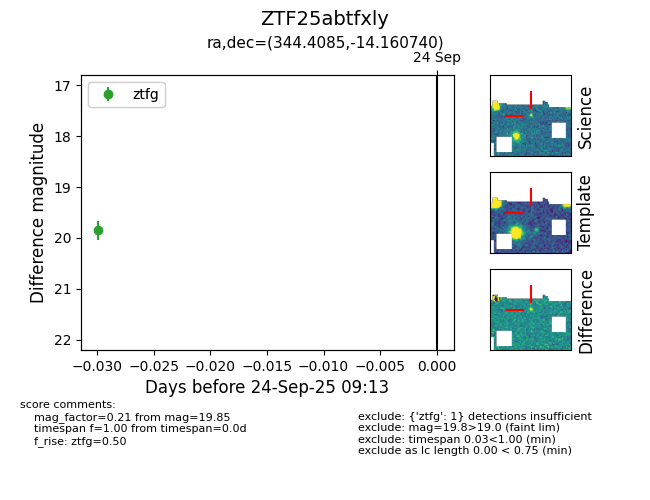

FINK: ZTF25abtfxly
Lasair: ZTF25abtfxly
ALeRCE: ZTF25abtfxly
ZTF25abtfxly (ztf,fink)
equatorial (ra, dec) = (344.4085,-14.16074)
galactic (l, b) = (53.2458,-60.49065)

last ztfg=19.85
1 ztfg detections